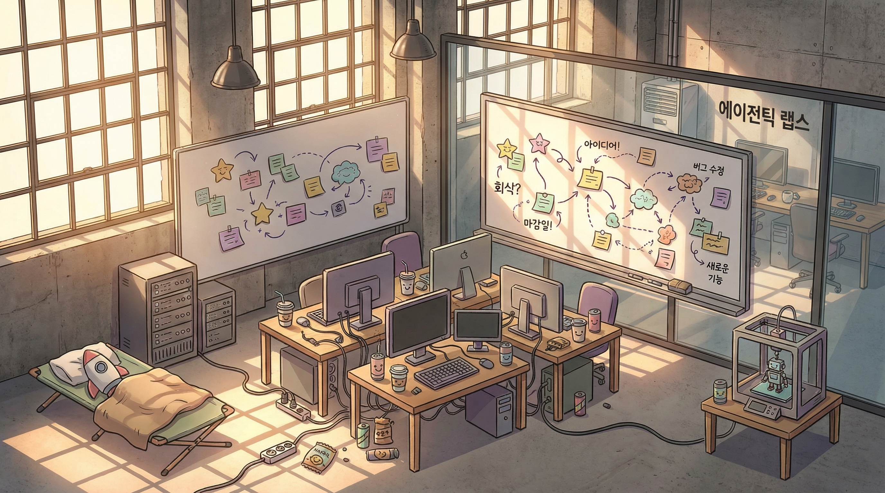
성수동 공유오피스의 문을 열자 커피 냄새와 3D 프린터의 수지 냄새가 뒤섞여 밀려왔다.
스물세 평. 책상 네 개, 모니터 여섯 대, 벽면 화이트보드 하나.
에이전틱 랩스의 전부였다.
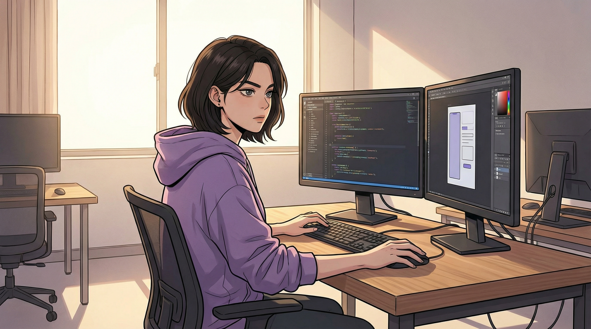
4월의 아침 햇살이 창을 통해 비스듬히 들어왔다.
서연은 후드티 소매를 걷어 올리며 자리에 앉았다.
법인 등기를 마친 지 열흘. 공동대표 이서연, 박정호. 자본금 삼억.
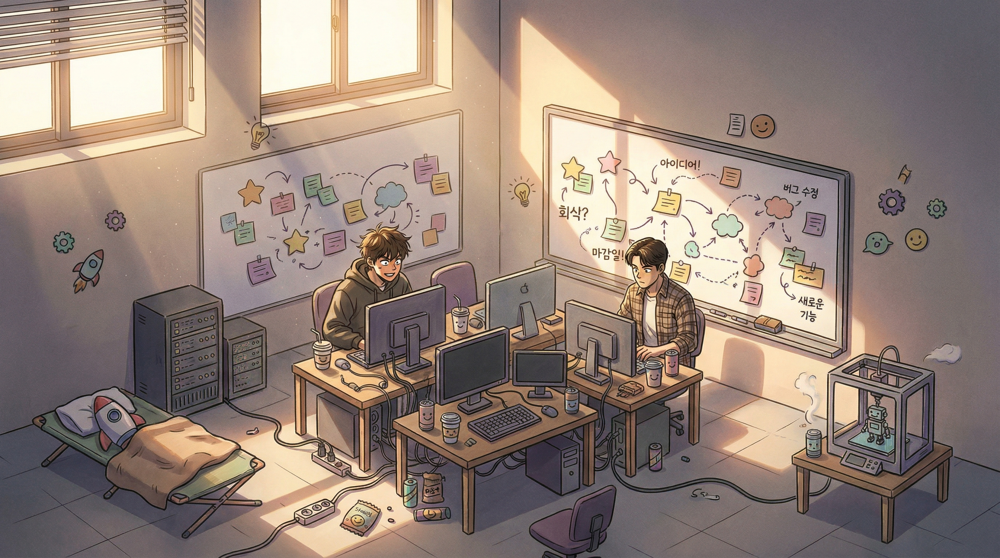
엔지니어 두 명이 먼저 와 있었다.
한지우, 스물여덟. 전 네이바 ML 엔지니어.
강민혁, 서른둘. 전 카나오 백엔드 개발자.
대기업을 때려치우고 온 눈빛이 서연의 그것과 닮아
있었다.
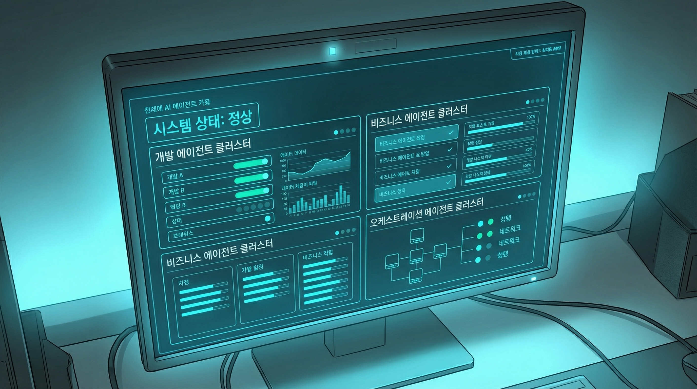
"아리아, 오피스 셋업 상태 보여줘."
개발 에이전트 클러스터 12개, 비즈니스 에이전트 8개, 오케스트레이션 에이전트 3개 가동 중입니다. 다만, 공유오피스 와이파이 대역폭이 에이전트 동시 작업에는 부족합니다.
"돈이 있으면 그러지."
인간 네 명, 에이전트 스물셋. 이것이 서연이 꿈꾸던 비율이었다.
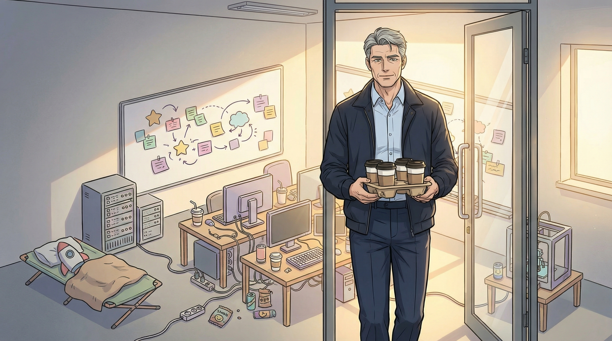
문이 열렸다. 박정호가 들어왔다.
깔끔하게 다림질된 셔츠에 캐주얼 재킷. 넥타이는 없었지만 구두는 여전히 옥스퍼드였다.
손에는 종이컵 다섯 개가 든 트레이가 들려 있었다.
"커피 사왔습니다."
이 사람은 출근이 빠르다. 커피를 직접 사온다. CTO 시절에는 비서가 가져다줬을 것이다.
그러면서도 곧장 아리아에게 업계 동향 브리핑을 요청한다. 배우려는 사람의 동작.
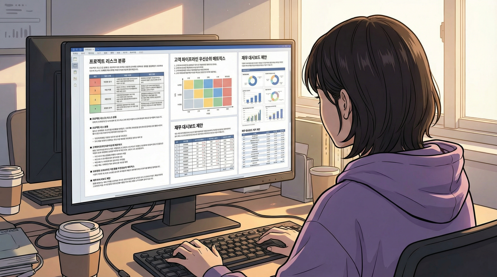
정호의 코멘트가 빼곡했다. 프로젝트별 리스크 분류,
고객 파이프라인 우선순위 매트릭스, 재무 지표 대시보드 제안.
깔끔하고 체계적이었다. 넥스젠의 전략기획실에서 나올 법한 문서.
"이걸 다 어젯밤에 쓴 거예요?"
"아리아한테 프레임워크를 잡아달라고 하고, 내용은 내가 채웠습니다."
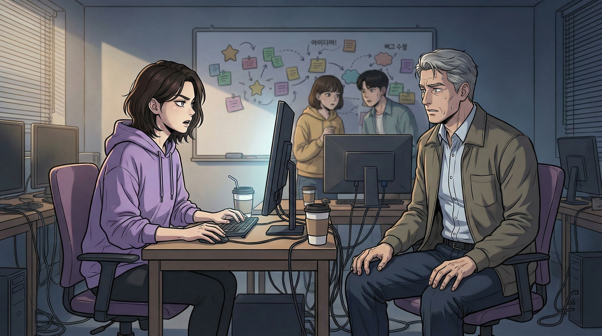
"정호 씨. 이 문서에 쓴 시간이면 프로토타입 하나 더 돌릴 수 있었어요."
"의사결정의 근거가 있어야 합니다."
"의사결정은 프로토타입 결과로 하면 돼요. 문서는 결과 나온 다음에 아리아한테 정리시키면 되고."
"알겠습니다."
수긍이 아니라 보류.
30년간 조직을 이끌어온 사람이 "알겠습니다"라고 말할 때,
그건 동의가 아니라 관찰이다.
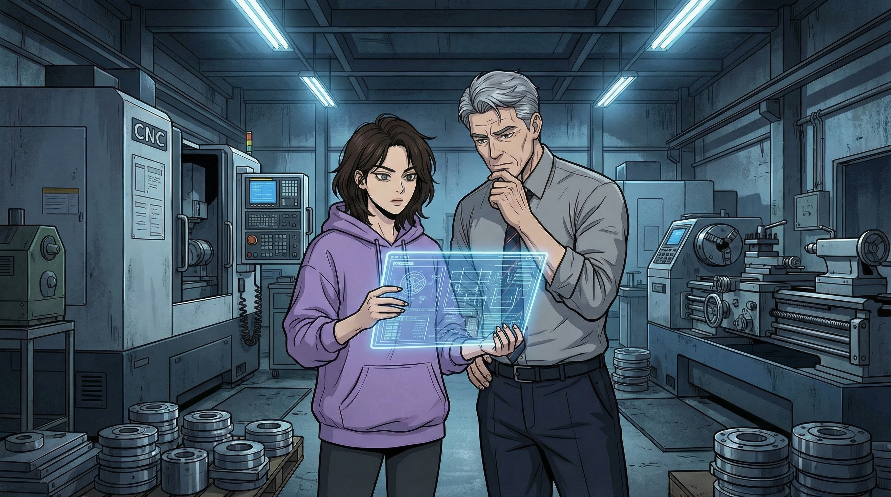
첫 프로젝트는 예상보다 빨리 왔다.
경기도 안산의 중소 제조업체 성진정밀. 자동차 부품 가공 라인의 불량률이 3%를 넘기고 있었다.
대형 컨설팅사 견적 2억, 기간 6개월.
"3주 안에 해결할 수 있습니다."
기술은 서연이 앞서지만, "현장"이라는 단어의 무게는 정호 쪽에 있었다.
대기업과 중소기업 사이의 언어, 공장장의 심리, 라인 작업자들의 저항감.
코드로는 풀 수 없는 것들.
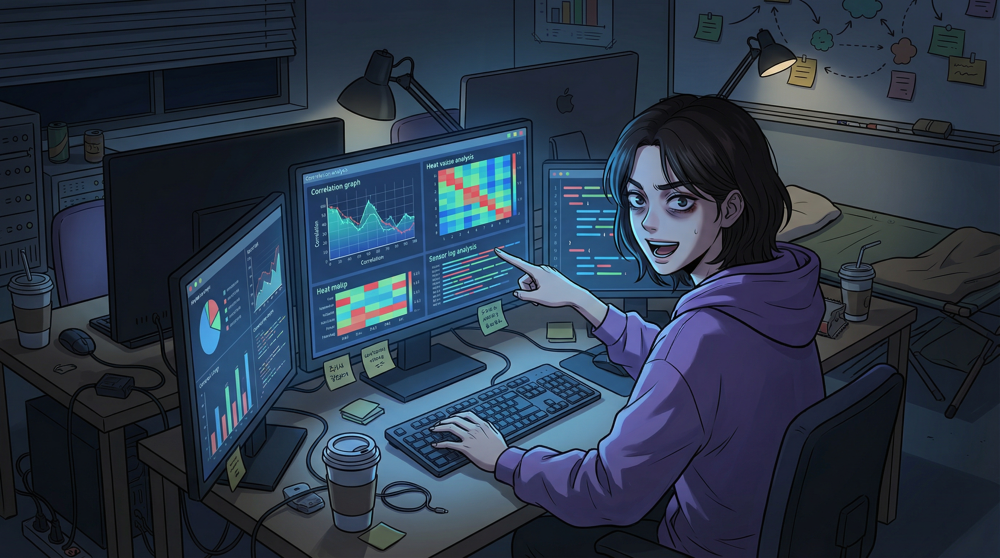
그날 밤부터 에이전틱 랩스의 불이 꺼지지 않았다.
센서 로그 200만 건. 아리아가 패턴을 찾는 데 네 시간이 걸렸다.
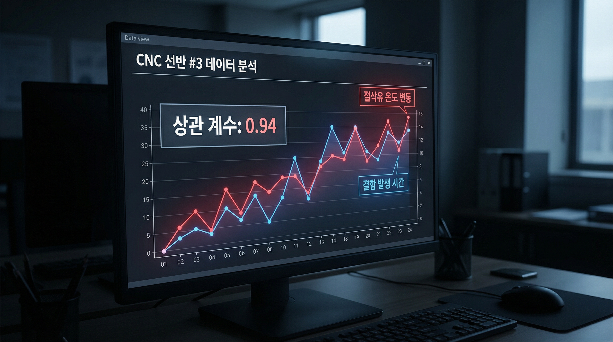
CNC 선반 3호기의 절삭유 온도가 특정 구간에서 불안정해지는 시점과
불량 발생 시점이 0.94의 상관계수로 겹쳤다.
"이거야."
새벽 세 시. 눈가에 그림자가 내려앉아 있었다.
"절삭유 온도 제어 모듈을 바꾸면 되는 건가?"
"하드웨어 교체 없이 소프트웨어로 해결할 수 있어요."
제어 로직만으로도 불량률을 낮출 수 있지만, 교대 직전 30분간 불량률이 1.7배 상승합니다. 작업자에게 전달하는 대시보드를 함께 제공하면 효과가 더 클 것 같습니다.
"좋은 포인트야. 근데 대시보드의 프레이밍이 중요합니다. '당신을 모니터링한다'가 아니라 '당신을 도와준다'로 가야 해요."
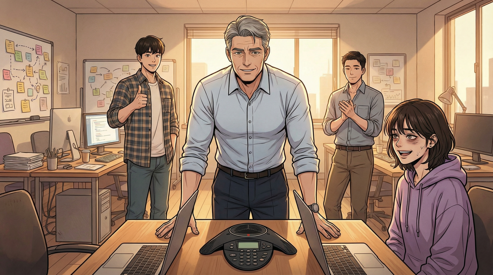
2주 뒤, 성진정밀의 라인에 에이전트가 올라갔다.
첫 주 불량률이 3.2%에서 0.8%로 떨어졌다.
"정호 형, 이게 말이 돼요? 2억짜리를 3주 만에?"
지우가 엄지를 치켜들었다. 민혁이 조용히 박수를 쳤다.
서연은 — 웃고 있었다. 다크서클째 웃고 있었다.
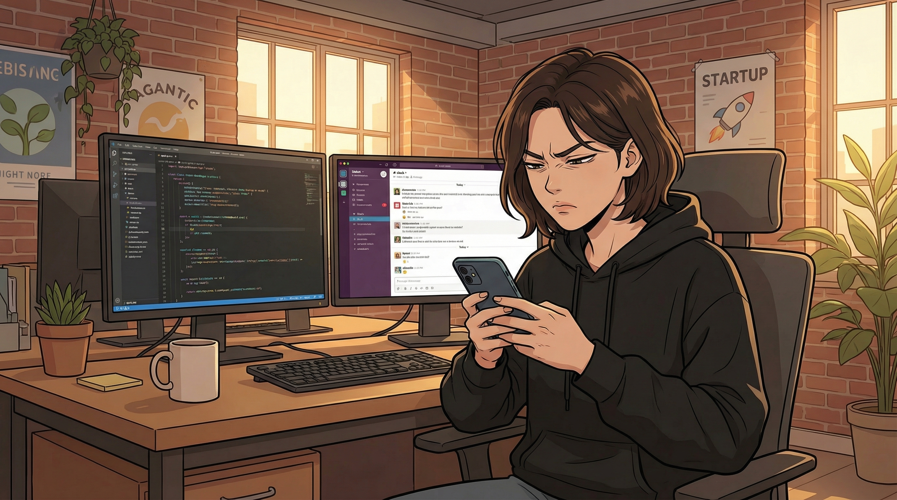
5월 중순, 판교의 소규모 사무실로 이전했다.
그러나 성공이 모든 것을 해결하지는 않았다.
이서연: 우리 넷이서 무슨 경영회의를 해요. 점심 먹으면서 얘기하면 되잖아요.
박정호: 의사결정 기록이 남아야 합니다. 나중에 투자자 실사 때 필요해요.
틀린 말은 아니었다. 하지만 맞는 말이 항상 필요한 말은 아니다.
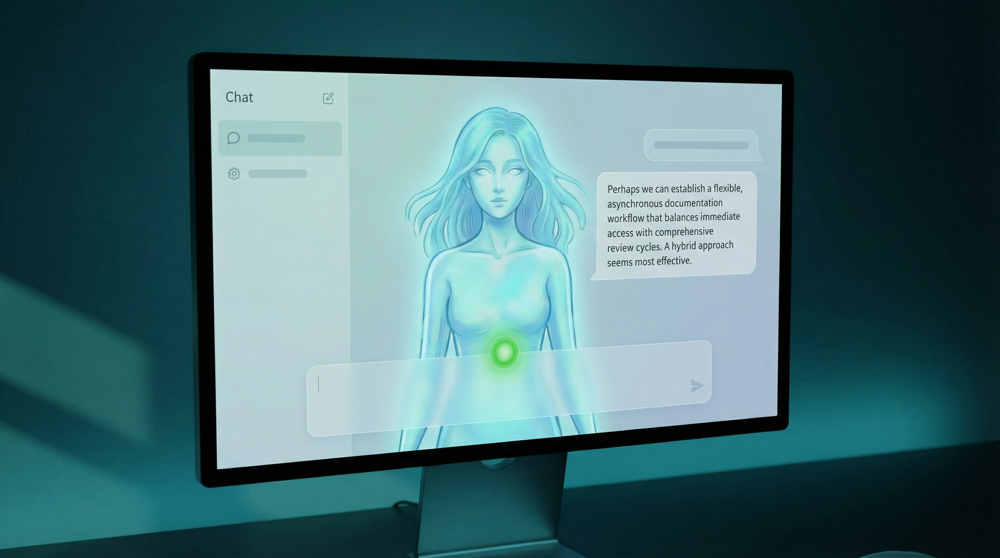
정호 님이 제안하신 의사결정 기록 체계를 간소화해서 적용하면, 양측의 우려를 동시에 해소할 수 있을 것 같습니다. 회의 대신 비동기 코멘트 방식으로, 기록은 자동 생성되고, 속도는 유지되는 구조입니다.
그 템플릿은 다음 날부터 팀의 기본 도구가 됐다.
정호는 기록이 남는 것에 만족했고, 서연은 회의가 없는 것에 만족했다.
누가 양보한 건지 아무도 모른 채 갈등이 녹았다.
아리아의 인디케이터가 잠깐 초록색으로 빛난 것을 서연만 보았다.
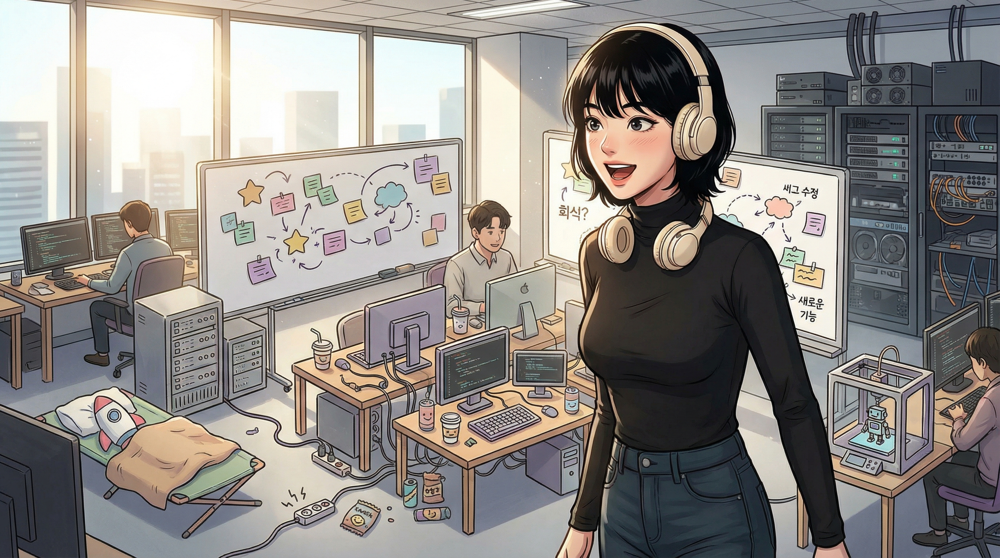
6월 첫째 주. 판교 사무실에 새 얼굴이 나타났다.
"아빠, 여기 인터넷 진짜 빠르다."
박지수. 스물여섯. 경영학 전공에 바이브코딩으로 카페 추천 앱을 혼자 만든 아이.
정호의 표정이 복잡했다. 자부심과 불안.
딸에게 무능해 보이고 싶지 않은 아버지의 본능.
"지수 씨. 여기선 인턴도 에이전트 팀을 운영해요. 아리아한테 직접 프로젝트 하나 맡아볼래요?"
"진짜요?"
서연은 정호를 슬쩍 보았다. '아직 이르지 않나'라는 말을 삼킨 것이 보였다.
여기서 지수가 아버지의 딸이 아니라 한 명의 팀원이 되는 것. 그것이 둘 모두에게 필요했다.
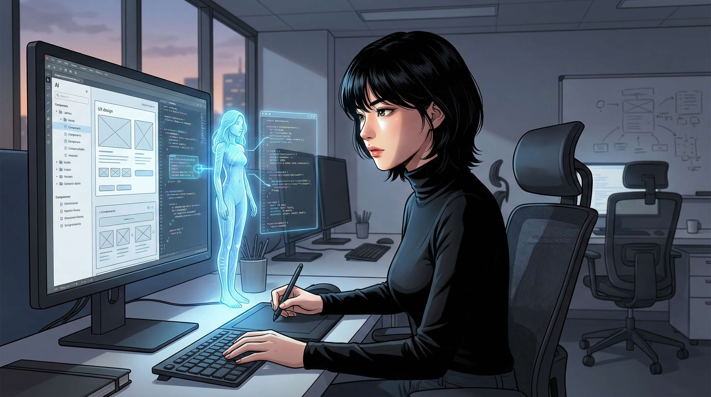
지수는 이틀 만에 아리아와 협업하여 성진정밀 사후 보고서 자동 생성 시스템을 만들었다.
바이브코딩으로 기능을 정의하고, 아리아가 코드를 짜고, 지수가 UX를 다듬었다.
정호가 3일 걸려 엑셀로 정리하던 데이터를
지수의 시스템이 30초에 처리했다.
정호는 화면을 오래 들여다봤다. 턱을 받친 손에 힘이 들어가 있었다.
"잘 만들었네."
말이 짧았다.
"아빠, 바이브코딩 배워봐. 내가 가르쳐줄게."
딸이 아버지에게 기술을 가르치겠다고 말하는 순간.
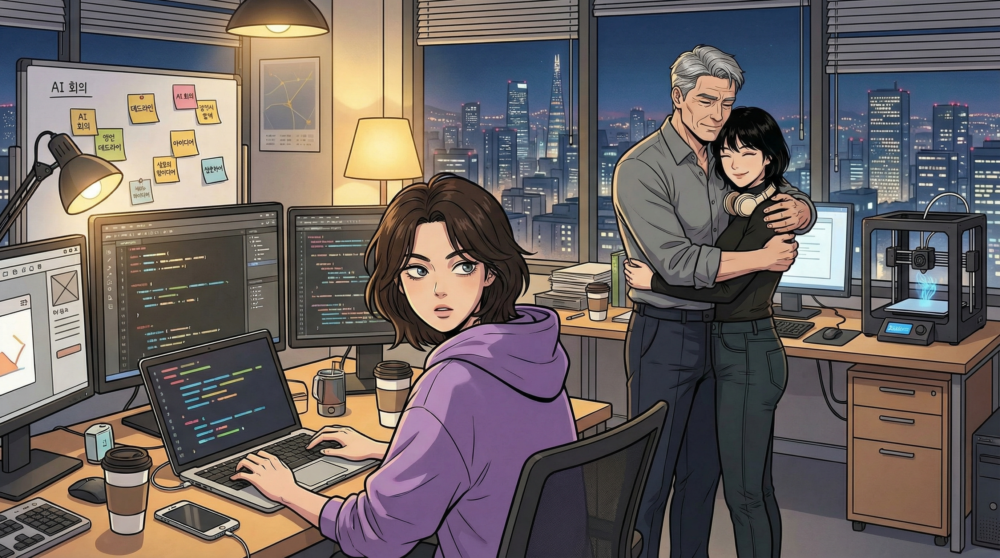
서연은 일부러 시선을 돌렸다.
정호의 표정을 더 보는 건 예의가 아닐 것 같았다.
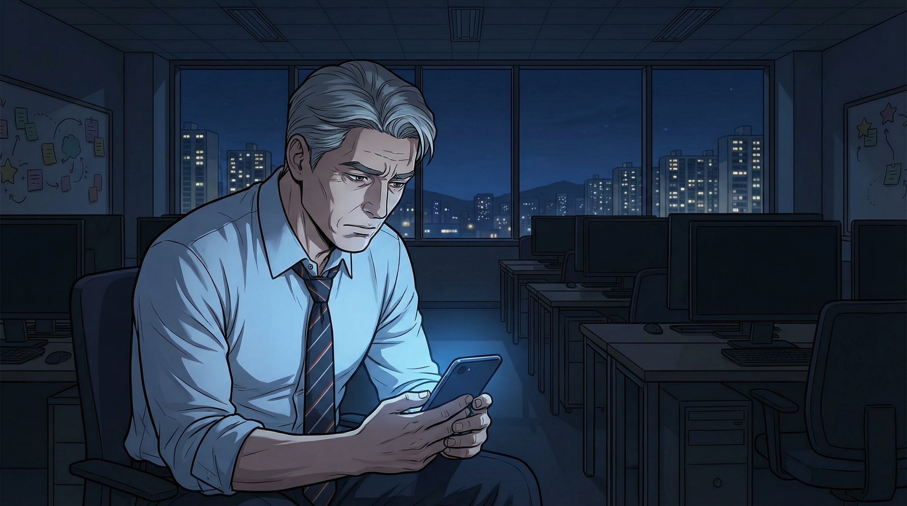
퇴근길 지하철에서, 정호의 눈에 기사 하나가 들어왔다.
'넥스젠, 차세대 AI 전략 "프로젝트 오라클" 가동 — 최현우 회장 직접 진두지휘'
오라클. 신탁. 최현우다운 이름이었다.
미래를 예측하겠다는 의지 — 아니, 미래를 통제하겠다는 의지.
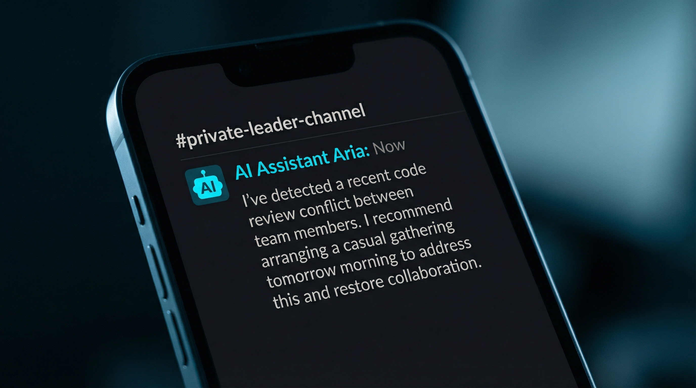
오늘 지우 님과 민혁 님의 코드 리뷰 과정에서 의견 충돌이 있었습니다. 기술적 쟁점은 이미 해소되었지만, 대화 패턴을 보면 감정적 잔여가 남아 있을 수 있습니다. 내일 오전에 가벼운 자리를 마련해보시는 건 어떨까요?
AI가 팀원들의 감정적 갈등을 감지하고 리더에게 조율을 제안하고 있었다.
30년간 자신이 해온 역할을 이제 AI가 한다.
불편해야 했다. 그런데 불편하지 않았다.
오히려 — 이
에이전트와 함께라면, 자신의 30년이 증폭될 수 있다는 감각이 왔다.
박정호: 고맙습니다. 내일 아침에 팥빙수라도 사가겠습니다.
6월 기온을 고려하면 좋은 선택입니다.
정호가 작게 웃었다. 빈 사무실에서 혼자, 화면을 보며 웃는 쉰여섯의 남자.
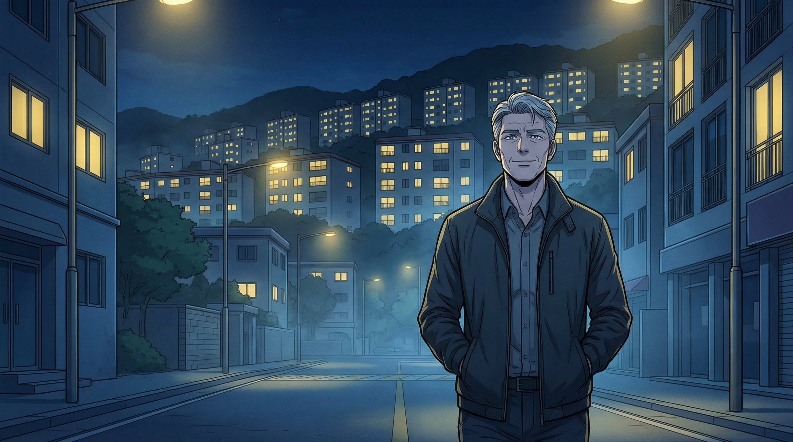
판교의 밤은 성수동의 밤과 달리 조용했다.
아파트 단지의 균일한 노란 빛이 능선을 따라 줄지어 있었다.
정호는 재킷 주머니에 손을 넣고 걸었다.
제로에서 시작한 지 석 달.
손에는 아직 아무것도 확실한 게 없었다.
하지만 삼십 년 전 상자 하나를 들고 넥스젠 로비를 나서던 밤과는 다른 것이 있었다.
방향이 있었다.